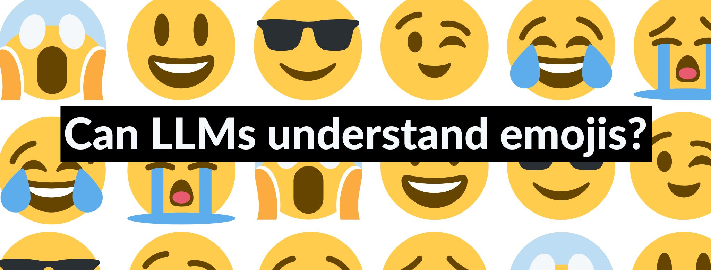

Emojis are graphic symbols or ideograms that represent not only facial expressions, but also ideas and concepts. Emojis are extremely popular worldwide, primarily in chat and social media. They can appear as an additional element in the sentence, as in "I liked the cake 😊", or replacing a word, as in "I liked the 🍰".
From the perspective of large language models (LLMs), emojis are interesting because they convey a semantic as well as a pragmatic meaning. This means that the meaning of an emoji is context-dependent. For example, the "🥳" emoji has a different meaning in a sentence like "I'm going to a party tonight 🥳" than in a sentence like "I have to study tonight 🥳". Whereas in the first sentence the meaning of the emoji is more literal (i.e., someone is happy to be going to a party), the meaning of the emoji in the second sentence has an ironic meaning (i.e., someone is actually sad for having to study). LLMs have been trained on vast amounts of data, so they certainly have seen emojis before. The question that arises here is whether LLMs can actually understand what emojis mean as well as how to use them effectively. Fortunately, some researchers have already looked into this.
Some studies have explored whether LLMs have a basic understanding of emojis. In other words, do they know what “🍰” represents, for instance? Surprisingly, LLMs like ChatGPT are extremely good at recognizing emojis, often reaching a 100% success rates in this type of tasks. In more complex tasks, where emojis are embedded in a sentence, LLMs are also quite good at naming the word the emojis are replacing. This is the case even in sentences where the emoji is replacing a verb instead of a noun (e.g., “You 🧡 books” = You love books).
Do these results mean that LLMs have a human-like understanding of emojis? Not quite! On a different test, LLMs were asked to judge the acceptability of sentences containing emojis. Basically, they had to rate whether sentences were “acceptable” or “unacceptable”. This is based on prior research done with human speakers that suggests that there are some ways to use emojis which are “awkward”. For example, a sentence such as “He is 👶ish” (He is childish) is acceptable for many speakers, but a sentence such as “She likes 🌸al perfumes” (She likes floral perfumes) is not.
Results showed that LLMs’ ratings differed greatly from human ratings. It seems that LLMs can recognize and understand emojis, but at the same time, they do not have an internal set of rules (a grammar) which dictate how to use them.
It is clear that LLMs can understand emojis at a basic level, but can they also understand them in ironic contexts? A study looked into this by having a group of people and an LLM rate a dataset of 3,000 social media posts containing emojis. For each post with an emoji, they had to rate how “ironic” the meaning was on a scale from 1 to 5.
Results showed that the LLM gave overall higher ratings for irony than humans. However, there was a positive correlation between human ratings and LLM ratings. This means that the LLM was able to detect irony in posts where humans also detected irony, though to a different extent.
Research shows that LLMs can easily recognize emojis and understand their meaning in simple sentences. However, they are not that good at interpreting more complex meanings like irony, which requires deep knowledge of pragmatics, something they lack. Likewise, since LLMs are not rule-based, they also lack the ability to reason about what emoji combinations are acceptable and which are awkward. But who knows? Maybe future AI applications overcome these weaknesses.